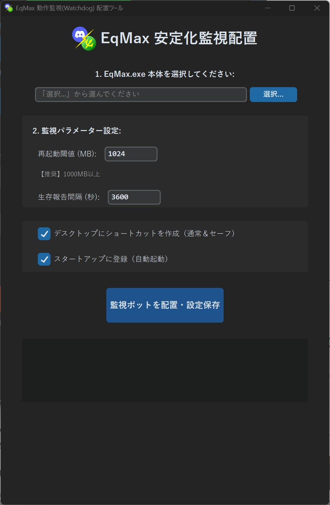
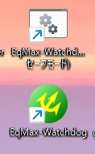
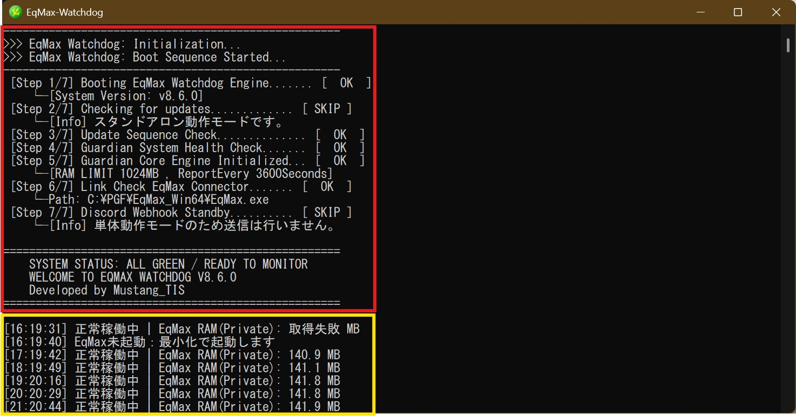

EqMax安定化ツール（Watchdog）
起動方法

総合ハブの
EqMax安定化 (➃の部分)を実行してください。安定化ツール概要

- EqMax.exeの選択: 対象のファイルを選択します。
- 監視パラメーター設定
- 再起動閾値: メモリーリークの閾値を設定します（標準: 1024MB、推奨: 512MB以上）。
- 生存報告間隔: 一定時間毎にアプリの状態を報告します（標準: 3600秒）。
※監視は毎秒行われており、この設定はログ出力の間隔です。
- ショートカット作成: デスクトップおよびスタートアップへの登録を選択します。
- セットアップ完了: 「監視ボットを配置」ボタンで完了です。
※Tips：本機能はDiscord連携ツール内の「Guardian Core」を独立させたものです。Discord連携アプリを導入済みの環境ではインストール不要です。
DiscordBridgeとの比較
| アプリ | SNS EEW通知 | メモリー監視 | 停止監視 | フリーズ検知 |
|---|---|---|---|---|
| DiscordBridge | 搭載 | 搭載 (1024MB) | 搭載 | 搭載 |
| 安定化ツール | 非搭載 | 搭載 (カスタム可) | 搭載 | 搭載 |
Watchdogを起動する
起動方法

ショートカットは二種類あります。
- 通常起動用: 最小化起動し、スタートアップに登録されます。
- セーフモード起動用: トラブルシューティング用です。一度正常に起動できれば次回から通常起動が可能です。
※初回はセキュリティ警告を許可してください。
bot実行時プロンプトの見方

最小化中のウィンドウを展開して確認できるログ画面です。
- 赤枠: プロセスの状態を表示します。
- 黄枠 (Eq_Guardian): フリーズ検知・自動再起動・メモリリーク監視・定期生存報告を行います。